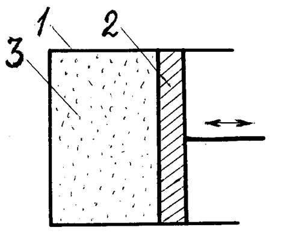
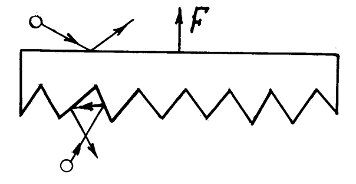
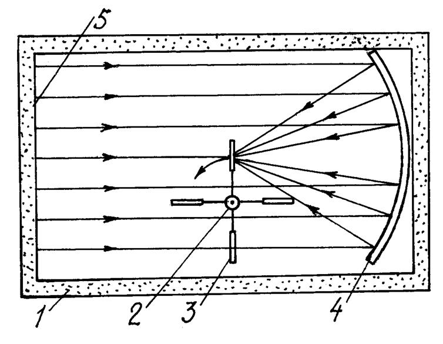
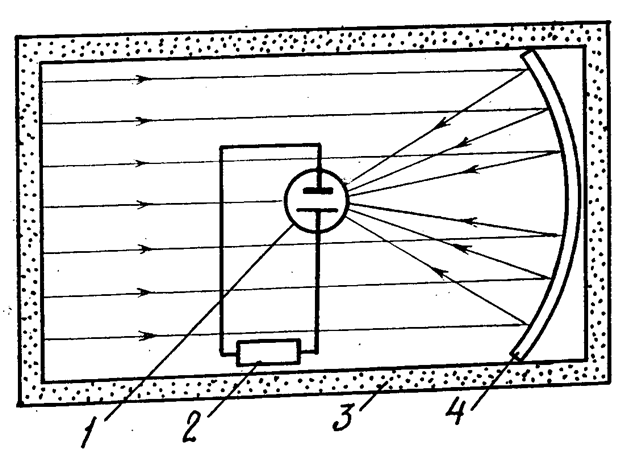

Тепло окружающей среды


В окружающей нас среде – воздухе, воде, земле
содержится громадное количество тепла. Тепловая энергия связана с
хаотическим движением молекул среды и равна нулю только при нулевой
абсолютной температуре (Т = 0 К). При обычных температурах Т ~ 300
К, она равна W = mCT, где m – масса среды, С – её удельная
теплоемкость. Ввиду огромной массы, этой энергии достаточно для
удовлетворения всех потребностей человечества. Вот её-то и пытаются
использовать в аппаратах, называемых вечными двигателями второго рода.
Вечные двигатели второго рода не нарушают закона сохранения энергии
(первого начала термодинамики), так как берут её не из ничего, а из
окружающей среды. Они противоречат другому основному закону природы –
второму началу термодинамики, согласно которому работу в тепловой машине
можно получать только при наличии перепада температур. Наличие энергии
является необходимым, но не достаточным условием для её практического
использования. Например, если есть высокогорное озеро, наполненное
водой, но нет возможности её слива в водоём с более низким уровнем, то
гидроэлектростанцию здесь не построишь, так как нельзя получить водного
потока, вращающего турбины. Если есть проводник с положительным
электрическим потенциалом, то для получения тока, зажигающего лампочку,
необходим второй проводник с более низким или отрицательным потенциалом.
Аналогично и в теплоте: чтобы тепловая машина заработала от энергии
среды, необходим «слив» её тепловой энергии, для чего нужен объект с
более низкой температурой, называемый холодильником.
Согласно термодинамике, максимальный коэффициент полезного действия
тепловой машины может быть достигнут в цикле Карно, где он составляет
КПД = (Тн – Тх)/Тн
.
(1)
Здесь Тн и Тх - температуры нагревателя и холодильника. Из (1)
следует, что КПД всегда меньше единицы. В равновесных условиях, когда в
окружающей среде нет разницы температур, т.е. Тн = Тх, КПД = 0. Поэтому
никакая тепловая машина в условиях теплового равновесия работать не
может, несмотря на наличие достаточного количества рассеянного вокруг
тепла. Турбины электростанций, паровые машины, двигатели внутреннего
сгорания и прочие действующие тепловые источники энергии производят
работу за счет нагрева газа до высоких температур Тн и его выброса в
окружающую среду с более низкой температурой Тх, но для нагрева мы
вынуждены сжигать топливо. Изобретатели же вечных двигателей стремятся
получить экологически чистую, бесплатную и безграничную энергию без
сжигания топлива, при одинаковых Тн и Тх. На что же они рассчитывают?
Многие убеждены, что второе начало неверно. Председатель Русского
физического общества В.Г. Родионов так и назвал свою статью [1] «Крах
второго начала термодинамики», а Е.Г. Опарин свою книгу [2] –
«Физические основы бестопливной энергетики. Ограниченность второго
начала термодинамики». Большинство же стараются концентрировать
рассеянную внутреннюю тепловую энергию окружающей среды в одном месте,
обходя второе начало. При этом цитируют Ф. Энгельса, который, критикуя
выводы из второго начала о неизбежности тепловой смерти Вселенной,
утверждал: «Излученная в мировое пространство теплота должна иметь
возможность каким-то путем… превратиться в другую форму движения, в
которой она может снова сосредоточиться и начать активно
функционировать» (Диалектика природы, 1975, с. 22).
Поскольку вечные двигатели второго рода не противоречат диалектике и
классику марксизма, то 10 июня 1954 года по постановлению Президиума АН
СССР ими стали заниматься официально. Работы поручено возглавить П.К.
Ощепкову.
Павел Кондратьевич Ощепков (1908 – 1992) в 1930-х годах занимался
радиообнаружением самолётов, в чем ему всячески способствовал маршал
М.Н. Тухачевский. Однако выбранный «на основе творческого применения
марксистского диалектического метода» ([3], с. 88) способ обнаружения по
замиранию сигнала при пролёте самолёта между радиопередатчиком и
приёмником (как в своё время у А.С. Попова) отличался не в лучшую
сторону от зарождавшегося тогда импульсного метода радиолокации.
Деятельность инженера Ощепкова и маршала Тухачевского наносила вред
обороноспособности нашей страны. Поэтому в 1937 году за вредительство
Ощепков был осужден на 10 лет, а его шеф приговорён к высшей мере
наказания. В тюремной камере, мечтая о тепле, Ощепков, по его словам,
открыл закон концентрации энергии, согласно которому «концентрация и
деконцентрация энергии в природе должны существовать в диалектическом
единстве».
Выйдя на свободу, Ощепков был обласкан хрущевским руководством, стал
доктором технических наук, профессором, заслуженным деятелем науки и
техники РСФСР, директором Института интроскопии АН, но продолжил
заниматься вредительской деятельностью. Считая слова Ф. Энгельса
указанием к действию, он в 1967 году при своём институте создал отдел
вечных двигателей второго рода и Общественный институт энергетической
инверсии (ЭНИН), в работу которого вовлёк тысячи ученых и инженеров из
разных городов. Ощепков поставил конкретную задачу: «Отыскать такие
процессы, которые позволили бы осуществить прямое и непосредственное
преобразование тепловой энергии окружающего пространства в энергию
электрическую… Открытие способов искусственного сосредоточения,
концентрации рассеянной энергии с целью придания ей вновь активных
форм…» [3]. Соратник Ощепкова М.П. Кривых сформулировал эту задачу в
стихах:
Тут способ нужен очень смелый,
Чтоб равновесное тепло
Непринужденно и умело
На концентрацию текло.
Конечно, никакой концентрации энергии институтом достигнуто не было (да и
не могло быть). За работы Ощепкова, санкционированные Академией наук и
позорящие советскую науку, ведущие академики вынуждены оправдываться
перед мировой научной общественностью в газете «Правда» (21 и 22 ноября
1959 г., 22 июня 1987 г.). Пожалуй, единственным действующим вечным
двигателем был аппарат, демонстрировавшийся падким до сенсации
журналистам самим Ощепковым. Вот как его описывает корреспондент газеты
«Московский комсомолец» С. Кашников [4]. «На столе небольшая установка:
тоненький, едва различимый глазом проводок одним концом соединён с
электроизмерительным прибором, а другим концом – ни с чем. Никаких
источников тока... А прибор показывает: ток идёт! Энергия берётся прямо
из воздуха. Тепло окружающей среды преобразуется в энергию движения
электронов, причем без перепада температуры». На самом деле проводок
служил антенной, принимающей сигналы радиостанций, телецентров,
промышленные шумы и наводки сети. Вряд ли профессор этого не знал, но
неграмотного в физике журналиста ему удалось обмануть.
Про ненавистный ему коэффициент полезного действия Ощепков пишет: «Ниже
100 % значение этого коэффициента принципиально быть не может – это
означало бы исчезновение подводимой к аппарату энергии» ([3], с. 264).
На самом деле наряду с полезной работой часть затраченной энергии всегда
теряется бесполезно.
Энтузиасты продолжают работы по созданию вечных двигателей второго рода и
в XXI веке. Они даже открыли свою академию наук, названную
Международной академией энергетических инверсий им. П.К. Ощепкова.
Действительный член этой академии Е.Г. Опарин пишет, что «Мир устроен
совсем не так, как мы видим его сквозь призму догм термодинамики, что
П.К. Ощепковым была правильно поставлена проблема концентрации энергии
окружающей среды. Решение этой проблемы не запрещено природой и откроет
качественно новую эру бестопливной энергетики» [2]. А теоретик вечных
двигателей второго рода кандидат технических наук Н.Е. Заев cчитает:
«Энергетическое изобилие… может придти совсем не от изобилия огня, а с
другой стороны… Концентраторы энергии окружающей среды (КЭСы, кэссоры)
на самых различных принципах – вот основа энергетики изобилия» [5]. В
1991 году он заявил, что «эффективный выход исследования (кэссоров)
дадут в 3 – 5 лет». С тех пор прошло более 20 лет, но реально
действующих аппаратов почему-то как не было, так и нет.
Природу обмануть нельзя. Второе начало термодинамики обеспечивает её
стабильность. Энергия сама собой только рассеивается. Если бы
самопроизвольная концентрация космической, вакуумной, воздушной или
какой-то другой энергии была возможна, то неожиданно возникающие то тут,
то там энергетические сгустки давно бы сожгли всё живое, в том числе и
нас.
Тем не менее, изобретатели работают. А как говорится, что ищешь, то
всегда найдёшь. Н.Е. Заев создал вечные двигатели второго рода на
сегнетоэлектриках и ферритах [5], причем по его словам действующие, и
патентовал их [6]. Увеличение выходной мощности относительно входной у
него доходило до 10 раз. Русским физическим обществом «кэссоры» Заева
отнесены к числу технических проектов, «имеющих приоритетное
народнохозяйственное значение в области энергетики» [7], а их автор стал
лауреатом премии этого общества. Однако объявленного результата ему
удалось добиться путем безграмотного измерения выходной мощности
несинусоидального тока [8].
Ведутся поиски цикла работы тепловой машины лучшего цикла Карно, в
котором бы КПД был не ниже, согласно формуле (1), а выше единицы.
Это сделал кандидат физмат наук из Московского центра
государственной метеорологической службы Б.В. Карасёв [9]. КПД его цикла
тепловой машины должен составлять 3 и даже больше, обеспечивая работу
без топлива простейшего аппарата, содержащего цилиндр 1, наполненный
обычным воздухом 3, и самодвижущийся в нем поршень 2 (рис. 1). Само
собой разумеется, что также имеются кривошипно-шатунный механизм,
коленчатый вал и маховик. Положительный результат расчёта достигнут за
счет того, что автор допустил элементарную ошибку при расчете КПД,
который и здесь на самом деле всегда меньше единицы [10].

Рис. 1. Мотор Карасёва
Можно, оказывается, и не изобретать новых циклов, а ограничиться старым циклом Карно и создать вечный двигатель на его основе. Для этого достаточно в формуле (1) для КПД подставлять не абсолютную температуру в Кельвинах, а используемую в быту температуру в градусах Цельсия, как это сделал изобретатель из г. Омска В. Федоров [11]. Например, взяв Тн = 20 оС, а Тх = -180 оС, он получил КПД = 10, т.е. 1000 %. Конструкция двигателя аналогична предыдущей (рис. 1), а в качестве рабочего тела используется тот же воздух. Теперь, как отмечает автор, мы можем обойти «всепланетную нефтяную мафию» и спасти цивилизацию от экологической катастрофы. Однако, если температуры нагревателя и холодильника, как и положено, в формуле (1) выразить в Кельвинах: Тн = 293 К, Тх = 93 К, то КПД цикла окажется равным 68 %. Следовательно никакой энергии мы не получим, и для перемещения поршня вынуждены совершать работу или сжигать ту же нефть [12].
Известный «опровергатель» физики кандидат физмат наук, доцент ЮФУ С.А. Герасимов в своих статьях [13 – 16] утверждае, что второе начало термодинамики «отличается капризным характером». «Почти у каждого из нас дома есть и холодильник, и нагреватель, но что-то никто из нас не замечал, чтобы при работе они начинали двигаться. И наоборот, отсутствие холодильника или нагревателя вовсе не означает отсутствие движения» [14]. Исходя из этого, он предлагает гравилёт в виде листа, одна сторона которого гладкая, а другая шероховатая (рис. 2). Этот ковёр-самолёт поднимается не мотором, сжигающим топливо, а за счёт ударов молекул воздуха, сила которых на шероховатую сторону якобы отличается на 10 и более процентов от силы, с которой атмосфера давит на гладкую поверхность.

Рис. 2. Ковёр-самолёт Герасимова
В результате, по расчётам Герасимова, один квадратный метр «ковра» может
поднять 10 тонн груза. Хотя автор и не сделал макета гравилёта, но тем
не менее утверждает, что «то, что возможно, обязательно проявит себя не
только на бумаге, но и в виде соответствующего технического устройства»
[13]. К сожалению, доцент забыл (или и не знал) школьного курса физики,
согласно которому давление воздуха на обе стороны листа
одинаковы.
Не мирятся со вторым началом также учёные из Института общей физики РАН
С.И. Яковленко, С.А. Майоров и А.Н. Ткачев [17]. Их компьютерный
эксперимент показал, что теплоизолированная кулоновская плазма сама
собой нагревается безо всяких внешних воздействий. «Вечный» нагреватель
на этом принципе почему-то не сделали, хотя и могли прославиться и
заработать.
Второе начало утверждает о невозможности концентрации тепловой энергии,
т.е. хаотического механического движения частиц среды, и получения за
этот счет работы. А нельзя ли воспользоваться энергией электромагнитного
излучения, возникающего в среде при соударениях её молекул друг о
друга? Это тепловое электромагнитное излучение занимает широкую область
частот и лежит в инфракрасной области спектра при комнатной температуре,
смещаясь в видимую область при температурах среды выше 500 -
1000о С. Электромагнитное излучения можно концентрировать
используя линзы, зеркала, дифракционные решетки соответствующего
диапазона длин волн.
Инженер Э. Шу из г. Ногинска в «Технике – молодежи» № 2/2003 предложил
использовать в вечном двигателе вертушку типа той, которая применялась
П.Н. Лебедевым для измерения давления света. Одна сторона лопаток
сделана зеркальной, а другая зачернена. По мнению автора, вертушка
должна вращаться, так как давление электромагнитного излучения на
зеркальную сторону, от которой фотоны отражаются, вдвое больше, чем на
черную сторону, которой они поглощаются. Неработоспособность устройства
очевидна, так как зачерненная сторона лопаток сама излучает фотоны и их
отдачей уравновешивает давление [17].
Для развития ума любознательного читателя я сам предложил троечку вечных
двигателей, «концентрирующих» электромагнитное излучение окружающей
среды [18]. Один из них показан на рис. 3.

Рис. 3.
В теплоизолированном помещении 1 находится турбина 2 с зеркальными
лопатками 3. С одной стороны турбины установлен концентратор
электромагнитного излучения – вогнутое зеркало 4, а с другой пусть
находится стена 5 помещения, выкрашенная в черный цвет. На сторону
лопатки 3, обращенную к стене 5, падает излучение стены, а на обратную
сторону – излучение, сконцентрированное зеркалом 4. Так как давление
электромагнитных волн прямо пропорционально плотности энергии (или числу
падающих фотонов), то, в отличие от устройства Шу, давление на разные
стороны лопаток у нас будет различным. Так, если диаметр зеркала взять
равным 1 м, а лопатки - 1 см, то плотность излучения, а соответственно и
давление со стороны зеркала будет в 10000 раз большим, чем с обратной
стороны, куда падает несконцентрированный поток. В результате появляется
разностная сила, и турбина должна начать вращаться. Для усиления
эффекта аналогичные концентраторы можно направить и на другие лопатки.
Конечно, результирующая сила очень мала, но у П.Н. Лебедева-то вертушка
вращалась! А главное сам факт получения работы без нагревателя и
холодильника, за счет внутренней энергии среды!
Во втором варианте подобного двигателя содержится зачерненный паровой
котел 1, на который линзами 2 фокусируется тепловое электромагнитное
излучение стенок теплоизолированного помещения 3 (окружающей среды)
(рис. 4)

Рис. 4.
Трубами котел 1 соединен с паровой машиной 4, холодильником которой
служит окружающая среда. Так как плотность сфокусированного потока
теплового электромагнитного излучения окружающей среды, падающего на
стенки котла, в тысячи раз больше, чем несфокусированного, то
температура котла начнет подниматься и станет больше температуры
окружающей среды и стенок помещения То. Термодинамическое равновесие
наступит при температуре Т, когда мощность излучения стенок котла станет
равной падающей. При равновесии котел не потребляет энергии окружающей
среды. А теперь заполним котел жидкостью, кипящей при температуре Тк ,
лежащей где-то посредине между То и Т. Жидкость начнет кипеть, а её пар
приведет в действие машину 4. Кипящая жидкость будет поддерживать
температуру котла на уровне Тк, меньшем равновесного Т. Следовательно,
термодинамического равновесия достигаться не будет, и энергия падающего
на котел излучения всегда будет больше излучаемой им энергии.
Осуществляемый таким путем непрерывный подвод энергии от окружающей
среды к котлу обеспечит вечную работу паровой машины без каких-либо
затрат топлива.
А не лучше ли прямое преобразование сконцентрированного
электромагнитного излучения среды в электрический ток, например, с
использованием фотогальванических элементов (рис. 5)? Здесь
сфокусированное зеркалом 4 инфракрасное излучение среды 3 (например,
стен помещения) падает на фотоэлемент 1, где преобразуется в
электрический ток, идущий на нагрузку 2.

Рис. 5
Фотоприемники улавливают даже фоновое («реликтовое») излучение
Вселенной, хотя его уровень много ниже нашего и соответствует излучению
черного тела с температурой всего 2,7 К. Поэтому не исключено, что
последний вариант будет работать даже в космосе.
Если кому-то понравились эти мои «безумные» идеи и он построит первый в
мире действующий макет подобного вечного двигателя, то это, по словам
В.К. Ощепкова, «по практическим последствиям… можно сравнить разве
только с открытием первобытным человеком способов искусственного
добывания огня». К великому сожалению, и мои вечные двигатели
неработоспособны, для проверки чего не нужно проводить экспериментов.
Дело в том, что электромагнитное излучение окружающей среды изотропно –
оно падает со всех сторон с одинаковой интенсивностью, и поэтому
сфокусировать его линзой, зеркалом или другим устройством
невозможно.
Таким образом, все попытки осчастливить нас бесплатной энергией, взятой у
равновесной окружающей среды, бесполезны и останутся мечтой
изобретателей, зря отнимающей у них рабочее время. Для получения из
тепла работы или электроэнергии необходима разность температур, которая
достигается нагревом или имеется в природе, например, у геотермальных
источников.
ЛИТЕРАТУРА
1. В.Г. Родионов. Крах второго начала термодинамики. ЖРФМ, 1996, № 1 – 12, с. 5 – 16
2. Е.Г. Опарин. Физические основы бестопливной
энергетики. Ограниченность второго начала термодинамики. М., Едиториал
УРСС, 2004
3. П.К. Ощепков. Жизнь и мечта. М., Московский рабочий, 1977, 1984
4. С. Кашников. Обыкновенный вечный двигатель. Моск. комсомолец, 5.09.1980
5. Н.Е. Заев. Близкая даль энергетики. ЖРФМ, 1991, № 1, с. 12 - 21
6. Н.Е. Заев. Условие генерации энергии нелинейными
диэлектриками и ферритами. ЖРФМ, 1991, № 1, с. 49 – 52; Новые граны
физики. М., Общественная польза, 1996, с. 73 – 77; Русская мысль, 1992, №
2, с. 7 – 28
7. Заявки на изобретения №№ 3601725, 3601726
8. ЖРФМ, 1997, № 1 – 12, с. 97 – 98
9. В. Петров. Вечные двигатели XXI века. Эфир как источник энергии. Инженер, 2010, № 8, с. 24 – 25
10. Б.В. Карасёв. Способы извлечения работы из среды с постоянной
температурой (сообщение второе). В сб. «К.Э. Циолковский: исследование
научн. наследия». Калуга, 2008, с. 264 – 265
11. В. Петров. Вечные двигатели XXI века. Воздух и песок как топливо. Инженер, 2010, № 5, с. 22 - 23
12. В. Федоров. Водяные двигатели. Инженер, 2003, № 7, с. 12 – 14
13. В. Петров. По поводу статьи В. Федорова «Водяные двигатели». Инженер, 2003, № 12, с. 5
14. С. Герасимов. Левитация: миф, реальность или парадокс? Инженер, 2009, № 12, с. 6 – 9
15. С. Герасимов. Диффузное рассеяние, подъемная сила и второе начало термодинамики. Инженер, 2010, № 10, с. 2 – 5
16. С.А. Герасимов. О левитации и экранировании в газовой динамике. Вопросы прикладной физики, 2005, № 12
17. С.А. Герасимов. Диффузное рассеяние и газодинамическая левитация. Современные наукоёмкие технологии, 2010, № 1
18. О. Лебедев. Можно ли нарушить второй закон термодинамики? Изобретатель и рационализатор, 1995, № 1, с. 18
19. В. Петров. О черном теле и зеркале. Техника – молодежи, 2004, № 2, с. 15
20. В. Петров. Использование тепла окружающей среды. Инженер, 2011, № 4, с. 24 - 26